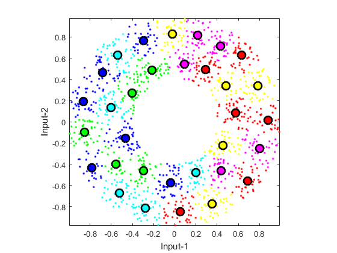

vecQuantize
Vector quantization using LBG method of center splitting
Contents
Syntax
- center=vecQuantize(data, codeBookSize)
- center=vecQuantize(data, codeBookSize, showPlot)
- [center, U]=vecQuantize(data, codeBookSize, ...)
- [center, U, centerHistory]=vecQuantize(data, codeBookSize, ...)
Description
center=vecQuantize(data, codeBookSize) returns the centers (codebook) of k-means via LBG method, where
- data: data matrix where each column is an observation
- codeBookSize: codebook size or number of cluster centers (should be the power of 2)
- center: codebook matrix where each column is a codeword
center=vecQuantize(data, codeBookSize, 1) display the animation and messages during training.
[center, U]=vecQuantize(data, codeBookSize, ...) returns extra info of the partition matrix U.
References
- Y. Linde, A. Buzo, and R.M. Gray, "An Algorithm for Vector Quantizer Design", IEEE Transactions on Communications, vol. 28, pp. 84-94, 1980.
Example
DS=dcData(2); data=DS.input; codeBookSize=2^5; showPlot=1; codebook=vecQuantize(data, codeBookSize, showPlot);
Iteration count = 1/200, distortion = 671.431405 Iteration count = 2/200, distortion = 413.987683 Iteration count = 3/200, distortion = 413.979949 Iteration count = 4/200, distortion = 413.929451 Iteration count = 5/200, distortion = 413.857126 Iteration count = 6/200, distortion = 413.777440 Iteration count = 7/200, distortion = 413.708860 Iteration count = 8/200, distortion = 413.672540 Iteration count = 9/200, distortion = 413.586843 Iteration count = 10/200, distortion = 413.460327 Iteration count = 11/200, distortion = 413.392654 Iteration count = 12/200, distortion = 413.345761 Iteration count = 13/200, distortion = 413.336058 Iteration count = 14/200, distortion = 413.336058 No. of centers = 2, loop count = 14, distortion = 413.336 Iteration count = 1/200, distortion = 413.336058 Iteration count = 2/200, distortion = 317.011950 Iteration count = 3/200, distortion = 153.855631 Iteration count = 4/200, distortion = 150.899142 Iteration count = 5/200, distortion = 150.706260 Iteration count = 6/200, distortion = 150.697310 Iteration count = 7/200, distortion = 150.694254 Iteration count = 8/200, distortion = 150.694254 No. of centers = 4, loop count = 8, distortion = 150.694 Iteration count = 1/200, distortion = 150.694254 Iteration count = 2/200, distortion = 77.166319 Iteration count = 3/200, distortion = 69.173620 Iteration count = 4/200, distortion = 66.776090 Iteration count = 5/200, distortion = 66.115422 Iteration count = 6/200, distortion = 65.913196 Iteration count = 7/200, distortion = 65.872842 Iteration count = 8/200, distortion = 65.857539 Iteration count = 9/200, distortion = 65.841022 Iteration count = 10/200, distortion = 65.839623 Iteration count = 11/200, distortion = 65.839623 No. of centers = 8, loop count = 11, distortion = 65.8396 Iteration count = 1/200, distortion = 65.839623 Iteration count = 2/200, distortion = 40.391472 Iteration count = 3/200, distortion = 38.518372 Iteration count = 4/200, distortion = 37.538486 Iteration count = 5/200, distortion = 37.053483 Iteration count = 6/200, distortion = 36.699328 Iteration count = 7/200, distortion = 36.450300 Iteration count = 8/200, distortion = 36.227920 Iteration count = 9/200, distortion = 36.091258 Iteration count = 10/200, distortion = 35.918482 Iteration count = 11/200, distortion = 35.751004 Iteration count = 12/200, distortion = 35.601493 Iteration count = 13/200, distortion = 35.462865 Iteration count = 14/200, distortion = 35.365573 Iteration count = 15/200, distortion = 35.228141 Iteration count = 16/200, distortion = 35.166579 Iteration count = 17/200, distortion = 35.114194 Iteration count = 18/200, distortion = 35.069926 Iteration count = 19/200, distortion = 35.043296 Iteration count = 20/200, distortion = 35.037513 Iteration count = 21/200, distortion = 35.034941 Iteration count = 22/200, distortion = 35.027501 Iteration count = 23/200, distortion = 35.019814 Iteration count = 24/200, distortion = 35.008156 Iteration count = 25/200, distortion = 35.004081 Iteration count = 26/200, distortion = 34.999930 Iteration count = 27/200, distortion = 34.998701 Iteration count = 28/200, distortion = 34.997271 Iteration count = 29/200, distortion = 34.997271 No. of centers = 16, loop count = 29, distortion = 34.9973 Iteration count = 1/200, distortion = 34.997271 Iteration count = 2/200, distortion = 20.538666 Iteration count = 3/200, distortion = 18.211051 Iteration count = 4/200, distortion = 17.247921 Iteration count = 5/200, distortion = 16.718941 Iteration count = 6/200, distortion = 16.364631 Iteration count = 7/200, distortion = 16.073371 Iteration count = 8/200, distortion = 15.842095 Iteration count = 9/200, distortion = 15.667754 Iteration count = 10/200, distortion = 15.575135 Iteration count = 11/200, distortion = 15.492154 Iteration count = 12/200, distortion = 15.464709 Iteration count = 13/200, distortion = 15.433901 Iteration count = 14/200, distortion = 15.389128 Iteration count = 15/200, distortion = 15.370335 Iteration count = 16/200, distortion = 15.349424 Iteration count = 17/200, distortion = 15.336405 Iteration count = 18/200, distortion = 15.319417 Iteration count = 19/200, distortion = 15.317789 Iteration count = 20/200, distortion = 15.317789 No. of centers = 32, loop count = 20, distortion = 15.3178